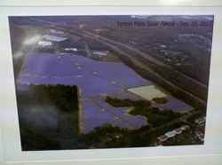
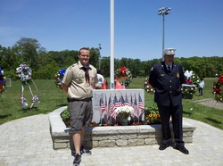
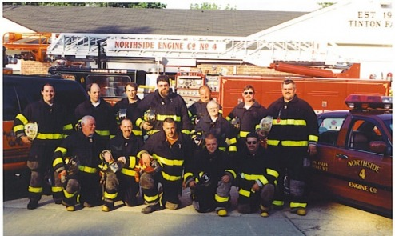
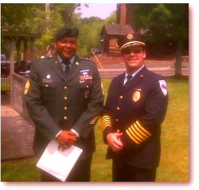
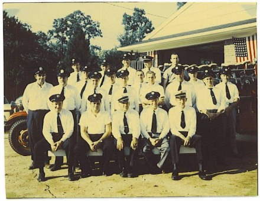
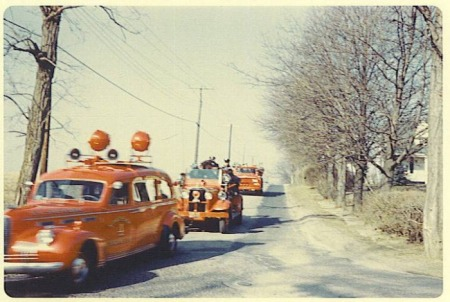
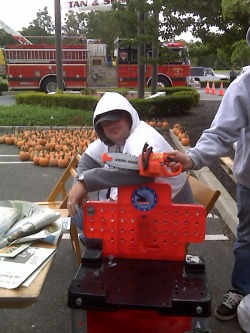
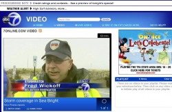
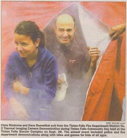

Tinton Falls Fire Departments Visit TF Solar

Tinton Falls fire departments were given a tour of the solar site on Shafto Road. Tours of businesses and facilities in the borough help firefighters become familiar with sites in case of emergencies. For information on the solar project visit Wikipedia.
Memorial Day 2013

Northside members — father and son Zach and Ron Neis — at the Memorial Day celebration and new location of the Tinton Falls Veterans Memorial at Sycamore Soccer Fields. Zach’s Eagle Scout project was to coordinate the move from the borough green to the new location.
2001

Kneeling, L–R: Kevin Kenney, Paul Nelson, Ron Neis, Scott Reed, Roy Latham
Standing, L–R: Larry Neis, Tom Libbin, Mark Wood, Butch Neis, Dave Reed, Ed Breidenbach, Dan Tierney, Joe Corson
2009 Drill
Memorial Day 2009

Ex-Chief Larry Neis took a moment at the 2009 Tinton Falls Memorial Day Service to thank First Sergeant Reginald Richardson for his service to our country. First Sgt Richardson serves in the Central Jersey Recruiting Company of Fort Monmouth.
196?


Congrats to Ryan!
Ryan completed his Firefighter training and graduated from Monmouth County Fire Academy on 8/11. He was subsequently officially soaked.
Members Continue to Make an Impression

Exemplary effort by member Greg in bringing his own tools to Northside drills. Unfortunately, the “little tyke” didn’t share well and needed a time out.
Northside Weather Expert

You’ve heard of Punxsutawney Phil? Well here is Northside’s own Fairweather Fred, sought by all the local news stations for his expert opinions during weather emergencies. Thank you, Fairweather Fred.
Community Day Smoke Tent and Thermal Camera
Northside participated in Tinton Falls Community Day in 2009, using our smoke tent to show residents how the thermal imaging camera allows us to see through smoke. The tent also shows how difficult it is to see in a smoky environment.
